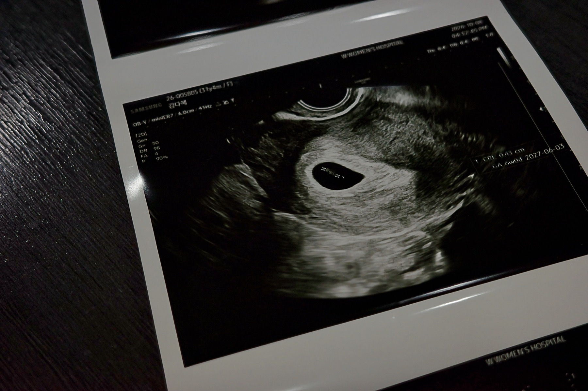
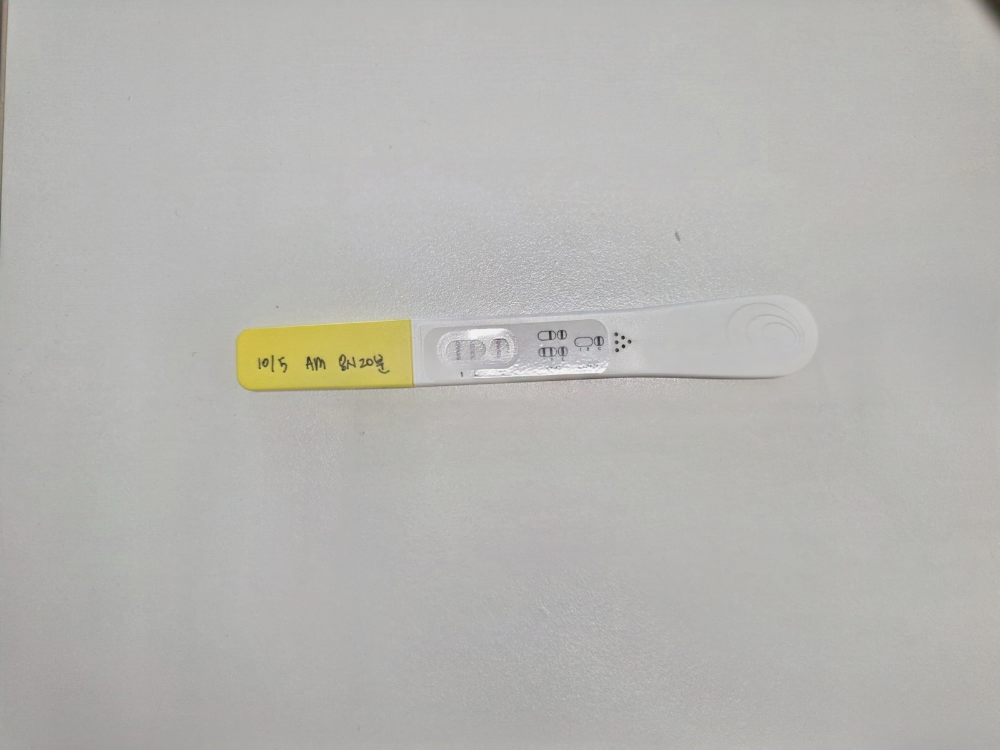

한글날 100년…
우리말, 일상과 세계를 잇다
훈민정음 반포 580돌 · 금요일부터 이어지는 사흘 연휴
한글날 안내 이미지. bnt뉴스 · AI 이미지10월 9일 한글날을 맞았다. 올해는 훈민정음 반포 580돌이자, 1926년 ‘가갸날’이라는 이름으로 첫 기념행사가 열린 지 100년이 되는 해다.
한글날은 우리 글의 의미와 가치를 되새기는 날이다. 첫 기념행사에서 시작된 역사는 오늘날 매년 10월 9일을 기념하는 국경일로 이어졌다.
올해 한글날은 금요일이다. 주말을 쉬는 경우 11일 일요일까지 사흘 동안 연휴를 보낼 수 있다. 일상에서 쓰는 말과 글을 돌아보며 한글의 소중함을 생각하는 하루다.
300년 전 시조,
K팝 노랫말로 다시 태어나다
‘청구영언’에서 찾은 음악의 재료
앳하트 ‘내 마음 한 조각’ 뮤직비디오. 타이탄콘텐츠 제공 / 서울신문옛 시조가 오늘의 대중음악으로 이어지고 있다. 서울신문은 한글날을 맞아 고전의 기록이 음악과 문화상품으로 확장되는 흐름을 소개했다.
그룹 앳하트의 노래 ‘내 마음 한 조각’은 ‘청구영언’에 실린 시조를 바탕으로 만들어졌다. 오래된 한글 노랫말이 새로운 선율을 만나 해외 팬들에게도 소개된 것이다.
한글은 기록을 보존하는 문자를 넘어, 오늘의 사람들이 즐기는 문화의 소재가 되고 있다.
김남길·서경덕,
스페인 한글학교에 힘 보태
노트북·프로젝터 등 교육기자재 기증
서경덕 교수(왼쪽)와 김남길. 서경덕 교수 SNS / 이데일리한글날 제정 100주년을 맞아 배우 김남길과 서경덕 성신여대 교수가 스페인 바스크 한글학교를 지원했다.
이데일리에 따르면 서 교수는 9일 김남길과 함께 노트북과 프로젝터, 스크린 등 교육기자재와 한글 학습 물품을 기증했다고 밝혔다. 해외에서 우리말을 가르치는 교육 현장에 힘을 보탠 것이다.
이데일리 · 10월 9일 기사 요약 / 원문
두 사람의 일상에 찾아온 변화…
내년 6월, 새 식구 맞는다
할아버지, 할머니 2027년 6월에 만나요!

아기의 첫 초음파 사진. 가족 제공
새 식구의 소식을 전한 두 줄. 가족 제공두 사람이 함께 써 내려가던 일상에 새로운 이야기가 시작됐다. 2027년 6월, 가족의 품으로 찾아올 작은 만남을 기다리고 있다.
아직은 작지만 벌써부터 큰 기쁨을 전하는 소식이다. 앞으로 함께할 날들을 떠올리며, 가족에게 첫 사진과 인사를 전한다.
글·사진 가족 제공